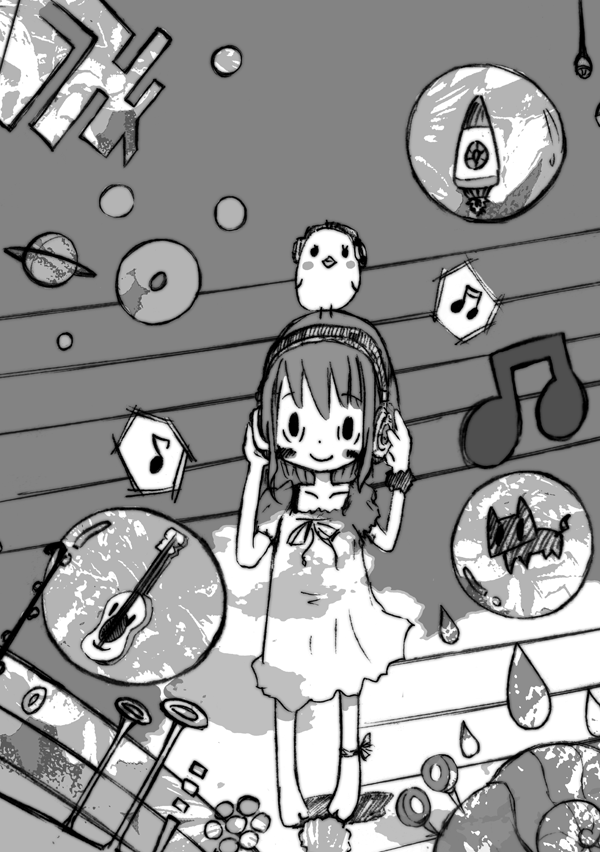
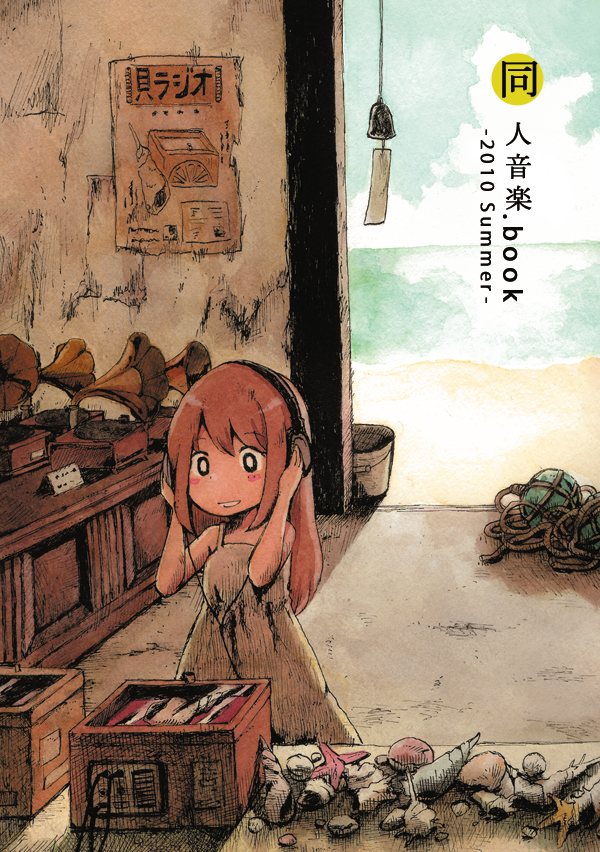
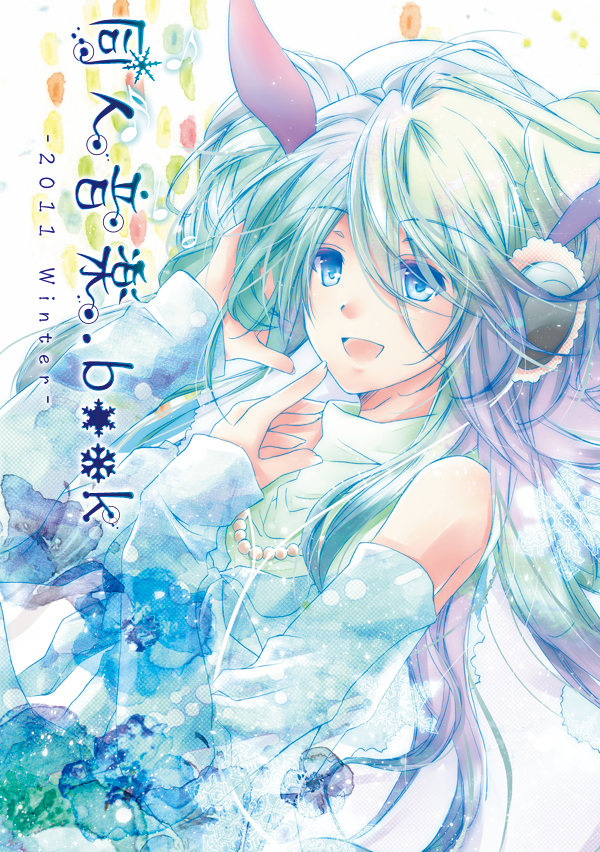

同人音楽好きが同人音楽に関する本「同人音楽.book」を作る集まりです。 同人音楽の聴き手が長年溜めてきた想いを綴る 「同人音楽好きの、同人音楽好きによる、同人音楽好きのための同人音楽本。」 レビュー、コラム、エッセイ、座談会、またサークルへのインタビューなどを掲載します。 最新情報は：同人音楽同好会 Twitter M3-2022春ありがとうございました！ 次はM3-2022秋の参加を検討しております   